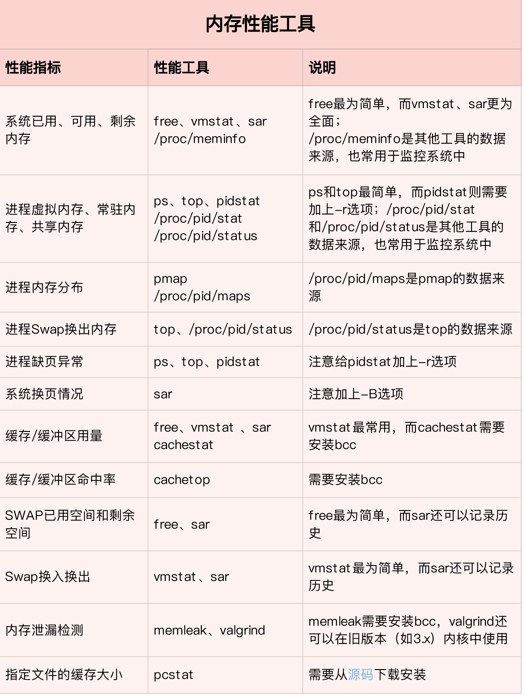
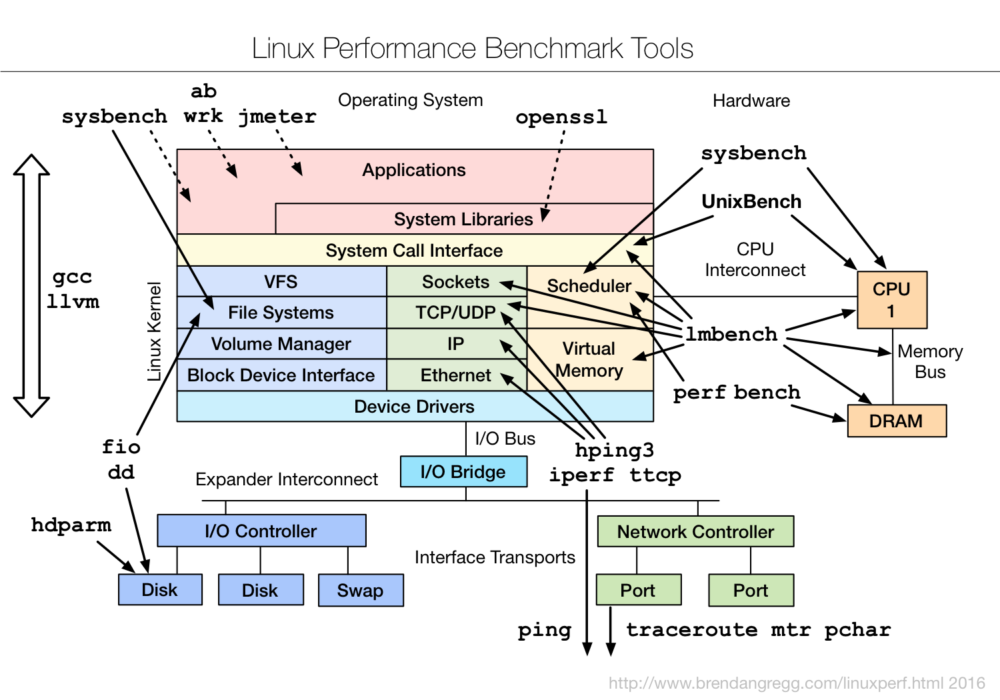
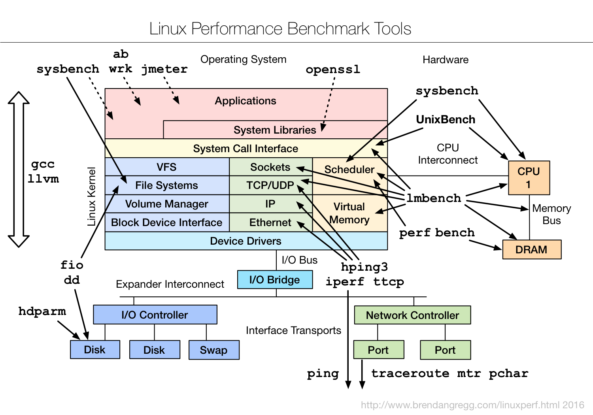

Linux性能工具总结
CPU性能工具
- 主要性能指标
- CPU使用率
- 平均负载
- 上下文切换
- CPU缓存命中率


内存性能工具
- 系统内存指标
- 进程内存指标
- SWAP


磁盘IO性能工具
- 文件系统的使用、缓存和缓冲区的使用
- 磁盘 I/O 的使用率、吞吐量和延迟等


网络性能工具


基准测试工具


生命的意义是成为你自己！

####USE法则

####应用程序的性能监控
####指标
####Jaeger调用链
*
####动态追踪技术
####DTrace工作原理
####动态追踪的机制
####事件源
####Linux追踪机制
####strace的缺点
####ftrace
####拓展阅读
####perf添加探针
perf probe --add do_sys_open
perf record -e probe:do_sys_open -aR sleep 10
perf script
# 为 /bin/bash 添加 readline 探针
$ perf probe -x /bin/bash 'readline%return +0($retval):string’
# 采样记录
$ perf record -e probe_bash:readline__return -aR sleep 5
# 查看结果
$ perf script
# 跟踪完成后删除探针
$ perf probe --del probe_bash:readline__return
####eBPF和BCC

####SystemTap和sysdig
####使用方法
####sysdig监控容器
查看机器上运行的容器列表及其资源使用情况
sudo csysdig -vcontainers
查看容器上下文的进程列表 sudo csysdig -pc
查看运行在wordpress1容器里CPU的使用率
sudo sysdig -pc -c topprocs_cpu container.name=wordpress1
查看运行在wordpress1容器里网络带宽的使用率
sudo sysdig -pc -c topprocs_net container.name=wordpress1
查看在wordpress1容器里使用网络带宽最多的进程
sudo sysdig -pc -c topprocs_net container.name=wordpress1
查看在wordpress1 容器里占用 I/O 字节最多的文件
sudo sysdig -pc -c topfiles_bytes container.name=wordpress1
查看在wordpress1 容器里网络连接的排名情况
sudo sysdig -pc -c topconns container.name=wordpress1
显示wordpress1容器里所有命令执行的情况
sudo sysdig -pc -c spy_users container.name=wordpress1

####优化
####NAT扩展阅读